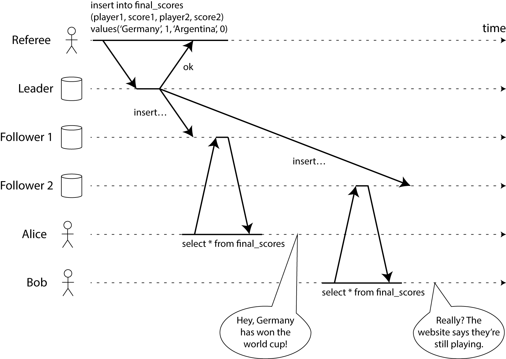
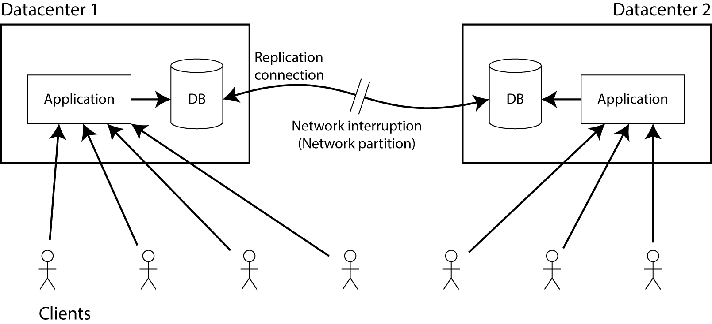

这篇 blog 已被翻译成 俄语, 日语 和 中文.
有关 CAP 问题的更多细节和其他选择方案的建议, 请阅读我的论文 A Critique of the CAP Theorem.
Jeff Hodges 在他那篇杰出的 blog 文章 "Distributed Systems for Young Bloods" 中建议用 CAP 定理来评判一个系统.
这的确很深入人心, 以至于这些人直接将他们的系统描述为
"CP" (consistent but not available under network partitions, 一致但在网络分区的情况下不可用),
"AP" (available but not consistent under network partitions, 可用但在网络分区的情况下不一致),
或 "CA" (meaning "I still haven’t read Coda's post from almost 5 years Ago", 还没有读过 Coda 的5年前的那篇文章).
我同意 Jeff 的所有其他观点, 但关于 CAP 定理, 我持有不同意见. CAP 定理过于精简, 且被广泛误解, 导致它对描述一个系统没有多大用处.
所以我恳请大家最好还是放弃 CAP 定理并停止引用和讨论. 并且我们要用更精确的术语来权衡系统.
(我知道我写这篇 blog 是在讽刺你们, 但至少这样我就有了个 URL, 当别人问为什么我不喜欢他们谈论 CAP 定理的时候我就可以甩给他们. 另外我很抱歉这篇文章像是在对你们吼, 但起码我吼的有理有据(lots of literature references)).
如果想将 CAP 称为一个定理 (而不是数据库软文中模糊的缺乏支撑的概念) 那就必须要精确.
数学是严谨的科学. 在证明过程中使用的词语必须含义相同, 证明才能成立.
但在证明中, 这些定义都是一些特殊场景, 例如:
一致性 (Consistency) 在 CAP 中其实是 线性一致性 (linearizability), 线性一致性是非常特定 (且非常强 Strong) 的一致性概念.
而且他跟 ACID 中的 C 是无关的, 尽管这个 C 也代表 "一致性" (consistency). 我接下来会解释什么是线性一致性 (linearizability).
可用性 (Availability) 在 CAP 中定义为 "系统中的非故障(数据库)节点针对收到的每个请求必须做出[非错误]响应". 这里的问题在于, 某个节点能够处理请求是不够的, 任何非故障节点都要能够处理请求.
许多所谓的 "高可用" (即低停机时间) 系统都不符合这种可用性的定义.
分区容错性 (Partition Tolerance)(非常错误的名称) 基本上意味着你的通信建立在可能会延迟或丢包的异步通信网络上. 互联网和我们的数据中心都有这个属性, 所以在这个问题上其实没有任何选择.
而且还要注意 CAP 定理不仅描述的是个旧的系统, 而且是一个非常特定的系统:
CAP 是一个单一读写寄存器 (single, read-write register) 系统模型. 例如, CAP定理没有说明涉及多个对象的事务, 因为这超出了定理范围. 除非能把这种情况精简到单寄存器.
CAP 定理考虑的唯一故障场景是网络分区 (network partition, 即节点保持运行, 但是节点所在的部分网络无法通信产生了分区). 这种故障绝对会发生, 但绝不是唯一会发生的故障:
节点可能会崩溃或被重启, 可能遇到磁盘空间不足, 可能遇到软件中的bug, 等等故障. 在构建分布式系统中, 需要考虑更大范围的取舍, 过度关注 CAP 定理则会让你忽视其他重要的问题.
此外, CAP 定理完全没有提到延迟 (latency), 大家关注的可不仅仅是可用性. 实际上, CAP 可用的系统允许响应无限慢, 并且这样仍然可以称作 "可用" (available). 如果加载一个页面要2分钟, 用户可就不会认为你的系统 "可用"了.
如果你使用的相关定义与上面描述的关于 CAP 的定义精确相符, 则 CAP 定理适合你. 不过如果使用其他的一致性或可用性的概念, 就不能期待 CAP 定理仍然适用.
当然这并不意味着重新定义一些词汇就超脱现实, 而是说不能把 CAP 定理作为指导, 而且不要用 CAP 定理来证明你的观点.
如果CAP定理不适用, 那就意味着你必须自己去考虑系统中的权衡条件. 你可以自己定义一致性和可用性, 并且证明你的定理. 但不要叫 CAP 定理了, 因为已经被占用了.
如果你不熟悉 线性一致性 (Linearizability, 即 CAP 意义上的 "一致性, consistency"). 简要的解释一下, 正式的定义并不是十分的直截了当, 不过定义的核心简单来讲是:
如果操作 A 成功完成, 进行操作 B, 那么操作 B 必须观察到系统处于操作 A 完成, 或更新完毕的统一状态.
为了更具体, 考虑一个非线性化的系统, 见下图 (这个图出自我未发布的书中):

该图显示了位于同一房间的 Alice 和 Bob, 他俩都在刷手机看 2014 足球世界杯的决赛结果. 在最终比分公布后, Alice 刷新页面, 兴奋地告诉 Bob 获胜者已经公布了.
Bob 半信半疑的刷新自己手机上的页面, 但是他的请求被转发到了一个滞后的数据库副本 (database replica), 所以他的手机上显示比赛仍在继续.
假如 Alice 和 Bob 同时重新加载, 那么他们得到了两个不同的查询结果也是有可能的, 因为他们不知道服务器处理他们各自的请求的确切时间.
然而, Bob 是在听到 Alice 惊叹最终比分后才点击了重新加载按钮 (发起他的查询), 因此他希望他的查询结果至少与 Alice 的一样, 然而却得到了旧的查询结果, 这一事实违反了线性一致性 (Linearizability).
Bob 的请求严格地发生在 Alice 的请求之后 (即它们不是并发的), 是因为 Bob 通过一个单独的通信通道 (本例中是现实世界的声音) 听到 Alice 的查询结果.
如果 Bob 没有从 Alice 那里听说比赛结束了, 他就不会知道他的查询结果已经过期了.
如果你正在构建一个数据库, 是无法知道客户端可能有哪些其他通信渠道 (backchannel) 的.
因此, 如果希望在数据库中提供线性语义 (linearizable semantics 即CAP中的consistency), 就需要让数据看起来只有一个副本, 即使数据可能在多个位置有多个副本 (replicas, caches).
实现这样的保障非常困难, 因为它需要大量的协调.
甚至计算机中的 CPU 都不能提供对本地内存的线性访问! 在现代 CPU 上需要使用显式内存屏障指令 (explicit memory barrier instruction) 才能线性访问. 甚至测试一个系统是否能提供线性访问也是很棘手的.
让我们简单地讨论下在网络分区 (network partition) 情况下放弃线性一致性 (linearizability) 或可用性 (availability) 的必要性.
假设在两个不同的数据中心中都有数据库的副本 (replicas). 数据复制的确切方法目前并不重要 - 它可能是单主 (主/从, master/slave), 多主 (主/主, master/master) 或基于 quorum (即节点选举制) 的副本 (类似 Amazon Dynamo).
副本的要求是, 在一个数据中心中写入数据的同时, 都必须将数据写入另一个数据中心中的副本.
假设客户端只连接到一个数据中心, 那么当数据复制的时候就必须依赖两个数据中心之间的网络链接.
现在假设网络连接中断 - 这就是网络分区 (network partition) 的意思. 猜猜会发生什么?

很明显你只能二选一:
程序可以继续写入数据库, 所以两个数据中心中数据库都是完全可用的. 但只要数据复制依赖的连接被中断, 在一个数据中心中对数据库的更改将不会同步到另外一个数据中心.
这违反了线性一致性 (linearizability)(在前面的例子中, Alice 可能连接到数据中心1, Bob 连接到了数据中心2).
如果不想失去线性一致性 (linearizability), 就必须确保在一个数据中心执行所有读写操作 (可以称作leader), 在另一个数据中心 (由于数据复制依赖的连接中断而无法更新到最新) 在网路分区恢复正常,数据同步完毕之前必须停止接受读写操作.
尽管非 leader 数据库没有失效 (failed), 但他无法处理请求, 因此它不是CAP可用 (CAP-available) 的.
(顺便说这基本就是对CAP定理的证明了. 这就是他的全部内容. 本例中使用了2个数据中心, 但这也同样适用于单一数据中心中的网路问题. 只是想象成2个数据中心时比较好理解.)
注意, 在选项2中的理论上"不可用" (unavailable) 情况下, 我们仍然在一个数据中心中愉快地处理着请求. 因此如果系统选择了线性一致性 (linearizability, 即它不是cap可用的), 这并不一定意味着网络分区会自动导致应用程序停机.
如果您可以将所有客户端请求转移到 leader 数据中心, 那么客户端实际上根本不会感觉到停机时间.
在实践中, 可用性并不完全与 CAP 可用性 (CAP-availability) 一致.
应用程序的可用性可能是通过 SLA 来衡量的 (例如, 99.9% 的合法请求必须在1秒内成功返回响应), 但是这样的 SLA 指标 CAP 可用 (CAP-available) 和 CAP 不可用 (CAP-unavailable) 的系统都能满足.
在实践中, 多数据中心系统通常设计为异步复制, 因此是非线性的 (non-linearizable). 然而, 这种选择的原因通常是由于广域网的延迟, 而不仅仅是数据中心故障和网络故障容灾.
在 CAP定理 对一致性 (线性一致性) 和可用性的严格定义下, 系统如何运行?
例如, 以具有单 leader 的复制型数据库为例, 这是大多数关系型数据库中配置副本的标准方法. 在此配置中, 如果客户端与 leader 发生分区, 则无法写入数据库.
尽管或许可以在从数据库 (只读副本) 读取数据, 但不能写入的事实意味着任何单 leader 的配置都不是 CAP 可用的. 尽管这样的配置常常被营销为"高可用性".
如果单 leader 集群不算 CAP 可用, 那是否意味着是 "CP" 的? 没那么简单, 如果允许应用读取 follower 节点, 并且数据复制是异步的 (大多数数据库都是这样的),
那么当从 follower 进行读取时, follower 可能会稍微落后于 leader. 在这种情况下, 读取就不是线性可用的, 即不符合 CAP 一致性 (CAP-consistent).
此外, 具有 快照隔离(snapshot isolation)/MVCC的数据库是刻意设计成非线性的, 因为强制实现线性一致性会降低数据库的并发性能.
例如, PostgreSQL SSI 提供顺序一致性 (serializability), 但不提供线性一致性 (linearizability), 而 Oracle 这两个都不支持.
数据库称作"ACID"并不意味着它满足 CAP 定理中对一致性的定义.
所以这些系统不 CAP 一致也不 CAP 可用. 它们既不"CP"也不"AP", 只是"P", 不论"P"到底是啥. ("三选二"的公式确实是可以直选一种的, 甚至三个都不选也可以!)
那么"NoSQL"呢? 以 MongoDB 为例: 每个 shard 中有一个 leader (只要不是在裂脑模(split-brain)式下, 就应该是这样的), 因此上面的情况不符合 CAP, Kyle 最近展示 了即使在最高的一致性设置下, MongoDB 也允许非线性读取, 所以不是 CAP一致的.
还有类似 Dynamo 的衍生品: Riak, Cassandra, Voldemort. 这些通常被称作"AP"是因为针对高可用优化了么?
还是取决于你的设置. 如果能接受单副本读写 (R=W=1), 那么它们确实是 CAP 可用的. 但是, 如果需要仲裁读写 (R+W>N), 并且遇到了网络分区, 节点较少的分区无法进行仲裁, 因此仲裁操作不是 CAP 可用的 (至少暂时不可用, 直到在节点较少的分区设置其他的数据库副本节点).
有人声称仲裁机制 (quorum) 的读写可以保证线性一致性 (linearizability), 但我认为依赖它不是个明智的选择,
比如一些特性的微妙组合: 松散仲裁 (sloppy quorums), 读修正 (read repair), 会导致棘手的边缘情况 (edge cases).
例如删除的数据又出现了, 副本数量小于原本的写节点数量 (W) (违反了仲裁机制), 副本节点数量增加超过了副本总数 (N) (还是违反了仲裁机制). 这些情况都会导致结果不线性一致.
这些系统并不是很糟糕, 大家一直在生产环境中正常使用. 然而到目前为止, 还不能严格地将它们分类为"AP"或"CP", 这要么是因为必须要进行特定的操作或配置, 要么是因为系统不满足 CAP 定理中对一致性或可用性的严格定义.
那么ZooKeeper如何? 它使用了一种共识算法, 因此人们通常将其视为选择一致性放弃可用性(即"CP系统")的明确案例.
但是, 如果查看ZooKeeper文档, 就会发现ZooKeeper在默认情况下不提供线性读取.
每个客户端连接到一个服务器节点, 当进行读取时, 只能看到该节点上的数据, 无论你在另一个节点上写入多少新数据.
这会比起每次读取都必须获取仲裁信息或每次读取都与主节点进行通信要快得多, 但这也意味着 ZooKeeper 在默认情况下不满足CAP定理中对一致性的定义.
在ZooKeeper中可以通过在读取之前使用同步(sync)命令进行线性化读取, 但不是默认的, 因为这会带来性能损失. 确实有人会使用会使用同步, 但通常不是每次操作都用.
ZooKeeper 的可用性如何? ZooKeeper 需要达成多数仲裁才能达成一致, 也就是说, 才能处理写操作.
如果发生分区, 其中一侧是多数节点, 另一侧是少数节点, 那么多数节点侧将继续可用, 但是少数节点侧就不能处理写操作, 即使节点都是正常 (up) 的. 因此, ZooKeeper 的写操作在分区情况下不是 CAP 可用的 (即使多数节点侧可以继续处理写操作).
有意思的是, ZooKeeper 3.4.0 添加了只读模式, 在这种模式下，分区情况下的少数节点侧可以继续提供读请求 - 而且不需要仲裁! 这个只读模式是 CAP 可用的.
因此, ZooKeeper 在默认情况下既不是 CAP一致的 (CP), 也不是 CAP 可用的 (AP). 它实际上就是个"P". 但如果需要, 可以通过调用sync让它变成CP的, 如果打开正确的选项, 对于读操作 (而不是写操作), 它实际上是AP的.
但这令人恼火. 仅仅因为 ZooKeeper 在默认情况下不是线性化的, 就称作"不一致", 那就严重歪曲了它的特性.
实际上 ZooKeeper 提供了非常好的一致性! 它提供的 原子化广播 (可简化为共识机制) 结合了 session保障 (session guarantee) 的因果一致性 (causal consistency) ,
这可比读取写入, 单调读取 (monotonic reads) 和一致前缀读取 (consistent prefix reads) 的组合更强大.
文档说 ZooKeeper 提供了顺序一致性, 但是这是低估了自己, 因为 ZooKeeper 的保证实际上比顺序一致性 (sequential consistency) 强很多.
正如ZooKeeper所展示的, 在存在分区的情况下, 拥有一个既不 CAP 一致也不 CAP 可用的系统是非常合理的, 而且在没有分区的情况下, 系统在默认甚至不是线性化的. (我想在 Abadi 的 PACELC 理论框架里, 这应该算是PC/EL的了, 但我觉得还是CAP比较有启发性.)
事实上我们很难将一个数据存储系统明确地划分为"AP"或"CP", 这一事实证明了: 这些根本不是系统的正确描述方式.
我认为我们不应将数据存储系统归类为"AP"或"CP", 因为:
在程序中, 可能会有多种具有一致性特征的操作.
在CAP定理的定义下, 许多系统既不一致也不可用. 但从来没有听说有人把他们的系统只称为"P", 大概是因为这样看起来很糟糕. 但这并不很糟糕 - 它可能是一个完全合理的设计, 只是不适合分类为CP或AP.
尽管大多数软件都不能很好地分类成这两种情况, 但人们还是试图将软件硬塞进这两种情况中的一种, 从而不可避免地将"一致性"或"可用性"的含义更改为任何适合他们的定义.
不幸的是, 如果词义发生变化, 那么CAP定理就不再适用, 因此CP/AP的区别就变得毫无意义了.
将一个系统分类为这两种的任何一种都会丢失大量的细节. 在分布式系统的设计中, 有许多关于容错, 延迟, 编程模型的简单性, 可操作性等方面的权衡. 这些为分布式系统的设计提供了支撑.
这些信息是不可能简单的就这样描述的. 例如, 尽管 ZooKeeper 有一个"AP"只读模式, 但该模式仍然提供有序的历史写入记录, 这比Riak或Cassandra等系统中的"AP"提供了强大得多的保障 - 因此将它们归为一类是很荒谬的.
就连 Eric Brewer 也承认 CAP 具有误导性而且过于简单化. 在2000年, CAP 的意义在于讨论分布式数据系统中的权衡, 这方面的确做得很好.
但它并不是一个突破性的正式结果, 也不是一个严格的数据系统分类方案. 15年后的今天, 我们有了更多具有不同一致性和容错模型的衡量工具可供选择. CAP已经达到了它的目的, 现在是时候继续前进了.
如果CP和AP不适合描述和评价系统, 那么应该使用什么来替代呢? 我认为答案不是唯一的. 很多人都认真思考过这些问题, 并提出了术语和模型来帮助我们理解问题. 要了解这些观点, 必须深入研究文献.
一个很好的起点是 Doug Terry 的论文, 他在文中用棒球的例子解释了不同水平的最终一致性 (eventual consistency ). 即使你(像我一样)不是美国人, 对棒球一无所知, 这篇文章也非常清晰易懂.
如果对事务隔离模型感兴趣(这与分布式副本的一致性不一样, 但比较相关), 那么可以了解下我的小项目 Hermitage.
Peter Bailis 等人探索了副本一致性 (replica consistency), 事务隔离 (transaction isolation) 和可用性 (availability) 之间的联系 (这篇论文还解释了 Kyle Kingsbury 喜欢展示的一致性层次结构的意义).
当你读过这些之后, 该准备好了深入研究这些文献. 我在这篇文章中放了大量的文章链接. 一定要看一看: 许多专家已经为你解决了很多问题.
最后, 如果你无法阅读那些论文, 我建议你看看我的书, 书中以平易近人的方式总结了最重要的一些理念. (看, 我非常努力地不让这篇文章成为一篇软文.)
如果你想更具体地知道如何正确使用 ZooKeeper, Flavio Junqueira 和 Benjamin Reed 的书是不错的.
无论你选择怎样的学习方式, 我鼓励你保持好奇心和耐心 - 这些东西来之不易. 但是这是有好处的，因为你学会了权衡利弊, 从而确定哪种体系结构最适合您的特定应用程序. 但是无论你做什么, 请停止谈论CP和AP, 因为它们没有任何意义.
感谢 Kyle Kingsbury 和 Camille Fournier 对本文草稿的注解. 当然, 任何错误或令人不快的意见都是我的锅.